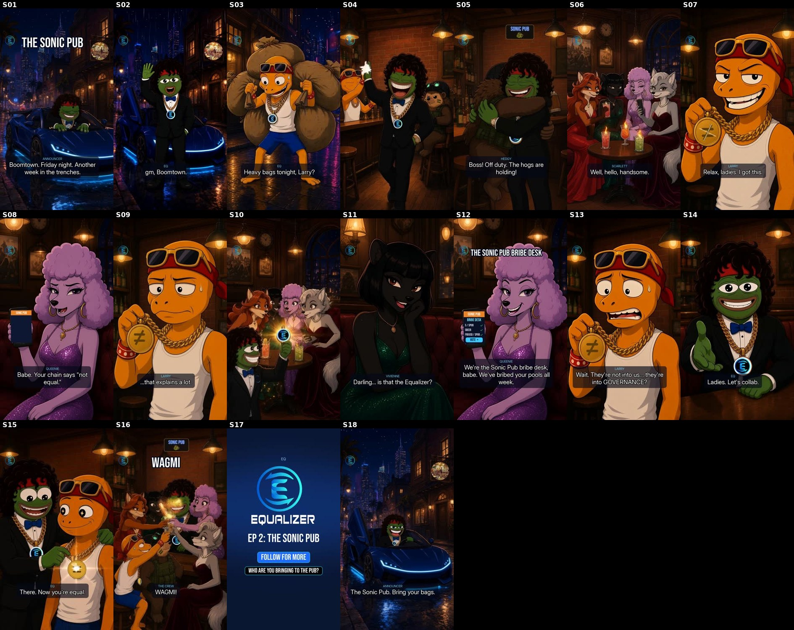

EQ · Ep 2 “The Sonic Pub” · Kling final
What this is
- Full motion build of the v3 Sonic Pub cut (Blake: “just build it on kling, now its time to bring it to life”). Same script, lines and timing as the preview (52.1 s). Every shot is real motion: 10 Kling 2.6 Pro shots, 7 Wan 2.7 lip-sync shots and the end card.
- Animation beats: EQ drives up and climbs out of the roadster (S01). He waves (S02), walks in high-fiving Larry (S04) and bro-hugs Hedgy (S05). The table turns and lights up (S06), and EQ flashes his medallion (S10). He flicks the slash off Larry's chain, so ≠ becomes = (S15). Everyone clinks glasses for WAGMI (S16), and the street loop runs back to the opening (S18).
- Fixed from the preview: S01 is real motion, not a soft blend. EQ is wide-eyed and open-grinned in S02, S14 and S15 (new plates p02w, p16w, p20x). Larry is genuinely worried in S09 and S13 (new plate p08w), and the clinch flick is a real hand move.
- Brand gates: EQ wears no glasses, pins or badges. His medallion is the E mark, and the clip windows are trimmed to frames where it stays clean. Larry's medallion carries tracked ≠/= overlays. Kling's “V” glyph and swing in S15 are covered by a tracked gold disc, with Kling's own glint kept on top.
- Mix: saved EQPepe ElevenLabs voices only, music ducked about 10 dB. Measures −14.4 LUFS and −1.6 dBTP, AAC 192k at 48 kHz.
- No numbers, APRs or lock claims anywhere. The SPUB mascot and ticker stay as the ticker; the venue is the Sonic Pub.
Script & dialogue
S01 · 0.0s
ANNOUNCER: Boomtown. Friday night. Another week in the trenches.
S02 · 4.4s
EQ: gm, Boomtown.
S03 · 6.5s
LARRY: Ser! You're rollin' in HOT!
EQ: Heavy bags tonight, Larry?
LARRY: Few understand.
S05 · 13.8s
HEDGY: Boss! Off duty. The hogs are holding!
S06 · 17.1s
SCARLETT: Well, hello, handsome.
S07 · 19.1s
LARRY: Relax, ladies. I got this.
S08 · 20.9s
QUEENIE: Babe. Your chain says "not equal."
S09 · 23.4s
LARRY: …that explains a lot.
S11 · 27.4s
VIVIENNE: Darling… is that the Equalizer?
S12 · 30.7s
QUEENIE: We're the Sonic Pub bribe desk, babe. We've bribed your pools all week.
S13 · 34.6s
LARRY: Wait. They're not into us… they're into GOVERNANCE?
S14 · 39.4s
EQ: Ladies. Let's collab.
S15 · 41.4s
EQ: There. Now you're equal.
S16 · 44.4s
THE CREW: WAGMI!
S18 · 49.0s
ANNOUNCER: The Sonic Pub. Bring your bags.
CT phrase bank (researched)
| another week in the trenches | survived the grind | "Another week in the trenches… some cooked. some got cooked. either way… we made it to friday. gm Degens" (@Dgenlifestyles); "Another week in the trenches. Gm CT" (@raphdecreator); "Took some Ls. Printed some wins. Survived another week in the trenches" (@_simplyBiggy) |
| gm / gm gm | greeting at any hour | "gm gm back in the trenches" (@godcandle) |
| rolling in | arriving with style | used in the script: "Ser! You're rollin' in HOT!" |
| ser | respectful/ironic "sir" | CT staple; Larry uses it |
| shilling bags / heavy bags / holding | pushing your coins; being stuck with them | "bags" made literal: Larry drags three giant sacks |
| few understand | smug "you wouldn't get it" | CT staple; Larry's cope line |
| partnering / collab / 🤝 | partnership-announcement culture | "🤝 PARTNERSHIP ANNOUNCEMENT… We're excited to announce our strategic partnership…" (NoManualSOL-style posts); "Kongz 🤝 WOME" |
| wagmi / ngmi | we're all gonna make it / not gonna make it | "we're all ngmi alone but wagmi together"; "the trenches run on all or nothing: 100x or zero, wagmi or ngmi" |
| send it / full send | commit fully | "WAGMI. Send it. See you on the moon. LFG" (@KushBitz_); Ronald: "full send it mode" |
| up only | permanent optimism | Larry at the PUMP tap |
| jeets / paper hands | weak sellers | "forgive our jeets, for they know not what they sell" (@patryx); "Let the jeets go. Let the paper hands exit…" (@THCUNITE) |
| we're so back / it's so over | mood cycle | "memecoin traders have two moods… each one lasts about 40 minutes" (@Fullportco); "goldfish with leverage" (@Rowanonchain) |
| LFG | let's f-ing go | ubiquitous |
| we are all $EQUAL | SPUB/Equalizer community line | Ronald Pump, 7 Oct and 20 Sep |
| wife-changing money / poors will be minted | aspirational ceiling (from ct-memes.md) | kept off-script, since it edges toward money claims |
Remaining weak spots
- S01: Kling only gives a clean step-out up to ~2.5 s of source, so the shot plays 0.57× (nearest-frame, a little steppy). EQ is small in frame, and he is climbing out, not fully standing, when the shot ends.
- S06: as the table lights up, Kling turns the cocktails into candle glasses (from ~1.3 s).
- S10: the flash is Kling's own burst on the E medallion, landing at ~1.7 s; there is no separate “=” graphic.
- S15: Larry's medallion swings fast after the flick, and the tracked “=” disc trails it by a few pixels on 2–3 frames (~2.3–2.7 s).
- S16: Larry's “=” disc squashes while his medallion turns edge-on (~1.6–2.0 s). It is small in frame.
- S03, S05, S09 and S16 are Kling shots without lip-sync, so their lines play over Kling's own mouth motion. The key dialogue (S02, S07, S08, S11–S14) is Wan lip-synced.
Contact sheet

Shot list
| S01 | 0.0s | Kling 2.6 Pro: drive-in + step-out (slowed) |
| S02 | 4.4s | Wan 2.7 lip-sync: wave + “gm, Boomtown” |
| S03 | 6.5s | Kling 2.6 Pro: Larry heaves the bags |
| S04 | 11.4s | Kling 2.6 Pro: walk-in high-fives |
| S05 | 13.8s | Kling 2.6 Pro: Hedgy bro-hug |
| S06 | 17.1s | Kling 2.6 Pro: table turns, lights up |
| S07 | 19.1s | Wan 2.7 lip-sync + tracked ≠ |
| S08 | 20.9s | Wan 2.7 lip-sync + tracked phone |
| S09 | 23.4s | Kling 2.6 Pro: worried Larry + tracked ≠ |
| S10 | 25.1s | Kling 2.6 Pro: EQ flashes the medallion |
| S11 | 27.4s | Wan 2.7 lip-sync |
| S12 | 30.7s | Wan 2.7 lip-sync + tracked bribe-desk UI |
| S13 | 34.6s | Wan 2.7 lip-sync + tracked ≠ |
| S14 | 39.4s | Wan 2.7 lip-sync: open grin, hand out |
| S15 | 41.4s | Kling 2.6 Pro: the flick, ≠ → = (tracked) |
| S16 | 44.4s | Kling 2.6 Pro: glass-clink toast + tracked = |
| S17 | 47.4s | end card |
| S18 | 49.0s | Kling 2.6 Pro: living street loop |